一句话结论
这一步证明：APV3 已经可以把真实网络图片纳入课程资产系统，同时保留来源、license、sha256 和 train/held-out/contrast 隔离。它解决的是“能不能用真实照片做课程材料”的工程地基。
15真实 PNG 资产
3水果概念
5每概念资产数
0生成示意图
0CC-BY-SA
苹果：真实照片进入课程资产
概念：苹果
3 张训练图，1 张 held-out 未见图，1 张其它概念作为 contrast。
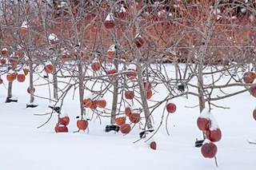
train 0苹果照片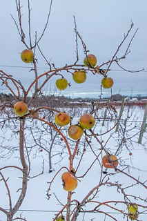
train 1苹果照片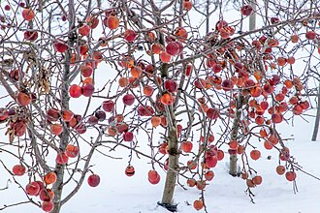
train 2苹果照片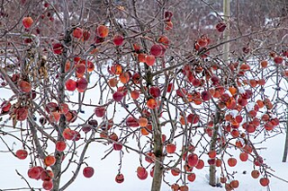
held-out未见苹果图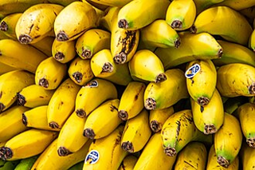
contrast香蕉图香蕉：同样的结构，不同真实来源
概念：香蕉
训练图和 held-out 图来自 Commons 白名单素材，contrast 使用橙子图。
 train 0香蕉照片
train 0香蕉照片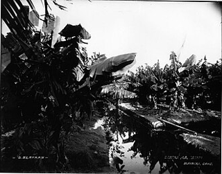
train 1香蕉照片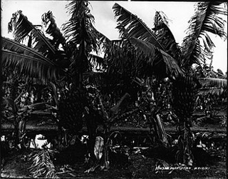
train 2香蕉照片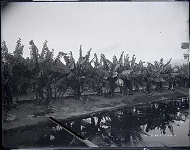
held-out未见香蕉图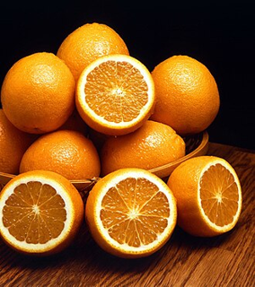
contrast橙子图橙子：真实照片和对照图分开
概念：橙子
这组材料展示真实照片进入课程系统后的结构：训练、未见验证、干扰对照三者都可追溯。
 train 0橙子照片
train 0橙子照片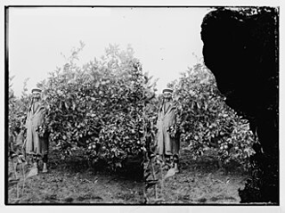
train 1橙子照片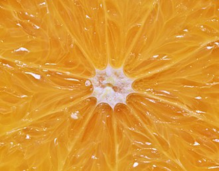
train 2橙子照片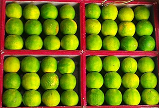
held-out未见橙子图 contrast苹果图
contrast苹果图资产治理怎么保证干净
| 检查项 | Phase 17 做法 |
|---|---|
| 来源 | 每张图都来自 Wikimedia Commons 文件页，source_url 不是伪造网址。 |
| license | 只收 PDM-1.0 / CC0-1.0 / CC-BY-2.0/3.0/4.0，不收 CC-BY-SA。 |
| 文件完整性 | 每张图统一转 PNG，manifest 记录 sha256，测试会重新读文件校验。 |
| 课程隔离 | 每个概念都有 train / held-out / contrast，held-out 不混进 train。 |
| 不污染旧证据 | Phase 14 的 200 个合成资产 manifest 保持不变，真实照片使用独立 real_manifest.yaml。 |
当前边界
Phase 17 证明的是“真实照片资产白名单接入”成立，不宣称 AP 已经完整学会视觉识别，也不宣称已经拥有大规模真实数据集。下一步可以把这批真实照片接入更长课程回放，再逐步扩展到更多物体、场景、动作和声音。